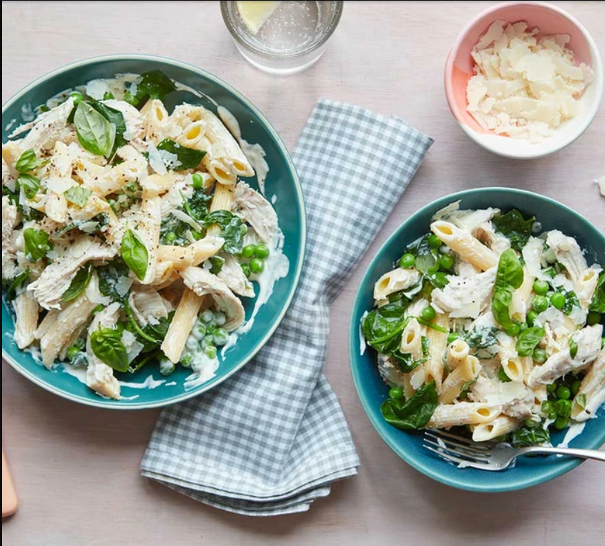

Main
Creamy chicken pasta

Ingredients
- 300g dried penne
- 2 tsp olive oil
- 1 garlic clove
- 75g baby spinach leaves
- 250g soft cheese
- 25g parmesan
- 4 cooked chicken breasts
- 100g frozen peas
- small bunch of parsley
Method
- Cook the pasta following pack instructions. Reserve 100ml of the water and drain the pasta in a colander.
- Meanwhile, heat the oil in a frying pan on a medium heat and fry the garlic and spinach for 3 mins until wilted. Add the soft cheese and heat until melted. Stir in most of the parmesan, then add the shredded chicken, peas and some of the pasta water. Bring to the boil and bubble for 2-3 mins until the chicken and peas are completely heated through.
- Add the pasta and stir until combined. Add more pasta water to loosen the sauce, if needed. Remove from heat, sprinkle over the remaining parmesan and parsley or basil to serve.